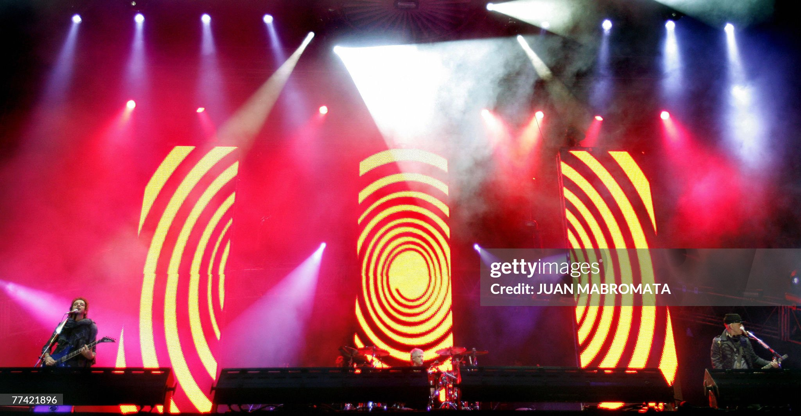
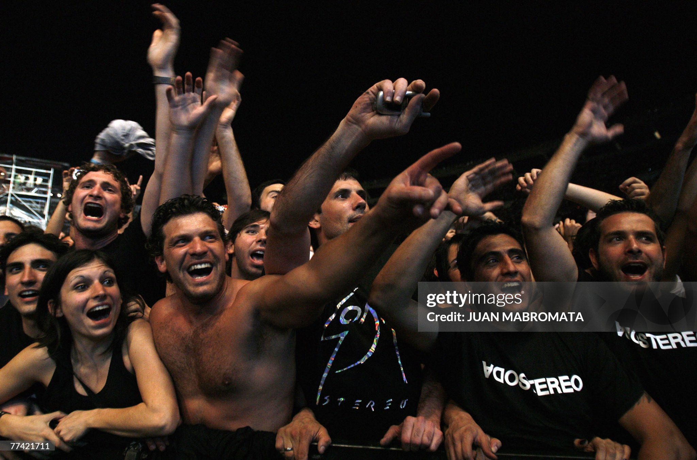
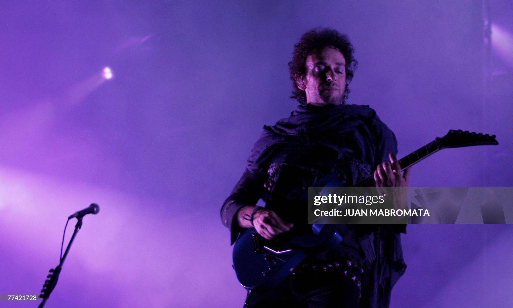

LA GIRA
GIRA ME VERAS VOLVER

RIVER PLATE
Los shows en el Estadio Monumental de River Plate fueron algunos de los momentos más importantes de la gira Me Verás Volver. Soda Stereo se presentó ante miles de personas en su país, en una serie de conciertos que agotaron entradas en muy poco tiempo. La expectativa era enorme y se notó en cada detalle del recital, desde el arranque hasta el cierre.
El reencuentro con el público argentino fue uno de los puntos más altos del tour, con una energía constante tanto arriba como abajo del escenario. Estos shows quedaron marcados como algunos de los más recordados de toda la gira.
CIERRE
El último show de la gira se llevó a cabo en diciembre de 2007, marcando el cierre definitivo del regreso de Soda Stereo a los escenarios. Fue una noche cargada de emoción, en la que tanto la banda como el público eran conscientes de que se trataba de un momento único.
A lo largo del concierto, se mantuvo una conexión muy fuerte con la gente, y el cierre dejó una sensación de despedida que fue tomando más significado con el tiempo. Este show terminó consolidándose como uno de los momentos más importantes en la historia del grupo.
Con el paso de los años, este cierre se ha convertido en un recuerdo aún más valioso para los fans, al ser la última oportunidad de ver a Soda Stereo en vivo con Gustavo Cerati.


HIGHLIGHTS
A lo largo de la gira, hubo muchos momentos destacados que quedaron en la memoria de los fans. Desde la interpretación de clásicos hasta la respuesta constante del público en cada canción, Soda Stereo logró mantener una intensidad muy alta en cada presentación.
La combinación de música, puesta en escena y ambiente generó una experiencia completa en cada recital. Estos pequeños momentos, repetidos en cada show, fueron los que terminaron construyendo el impacto general de la gira.